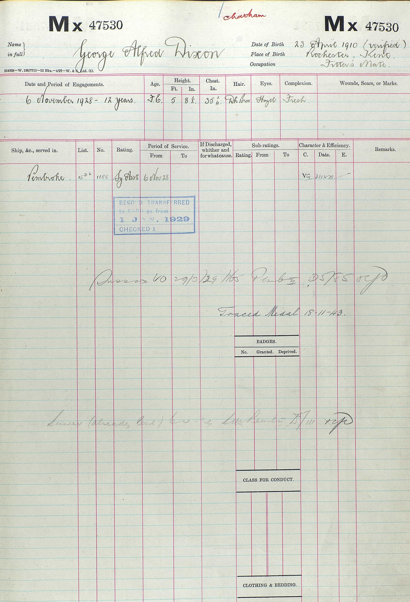

George Alfred Dixon 1910 - 1976
[ Home ] | [ Calendar ] | [ Surnames Index ] | [ Census Index ] | [ Family History ]A leading supply assistant r n cry 47530 and the eldest of 3 children of Alfred Dixon (an iron molder) and Alice Cowell, George Dixon, the fourth cousin once-removed on the mother's side of Nigel Horne, was born in Rochester, Kent, England on Apr 23, 19101,2,3, was baptized there at St Nicholas on Jun 1, 1910. He married Phyllis Baker (with whom he had 1 surviving child, Janice Norma) in Strood, Kent, England around Feb 19374.
During his life, he was living at 112 Cecil Road in Rochester on Apr 2, 19115; and at 50 Grove Road in Rochester on Sep 29, 19391. On Nov 6, 1928 he was serving in the navy (Royal Navy (HMS Pembroke) - Service Number MX 47530).
He died on Apr 21, 1976 in Herne Bay, Kent, England2.
Parents
- Alfred was born on Feb 1, 1883
- Alice Sarah was born on Dec 1, 1883
Citations
- 1939 Register - Findmypast (was recorded at this address)
- England & Wales deaths 1837-2007 - Findmypast
- Kent Baptisms - Findmypast
- England & Wales marriages 1837-2008 - Findmypast
- 1911 Census for England & Wales - Findmypast (was age 0 and the son of the head of the household)
Media
George Alfred Dixon - Naval Record

1911 Census for England & Wales - GBC/1911/RG14/03896/0023/3
England & Wales marriages 1837-2008 - BMD/M/1937/1/AZ/000273/093
England & Wales deaths 1837-2007 - BMD/D/1976/2/AZ/000271/008
1939 Register - TNA/R39/1769/1769I/008/12
Kent Baptisms - PRS/MEDWAY/BAP/0434647
Family Tree

Generated by ged2site. Last updated on Jun 11, 2024